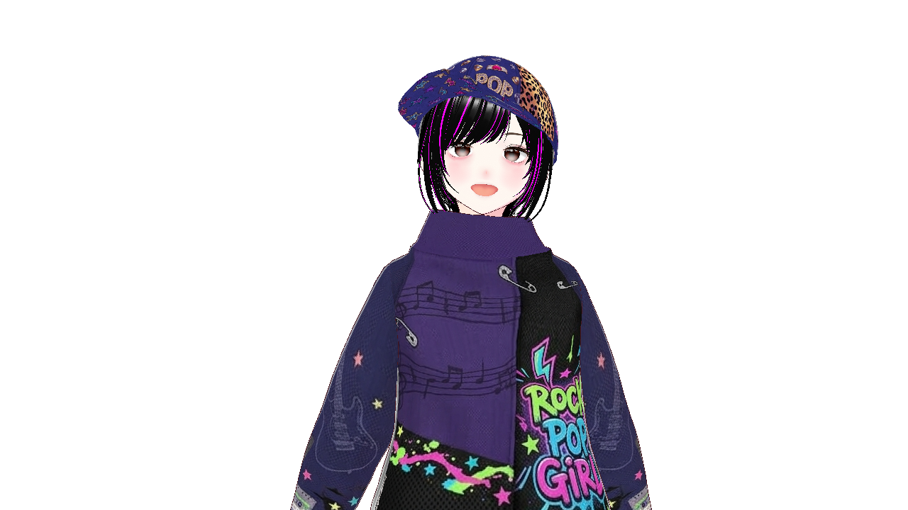
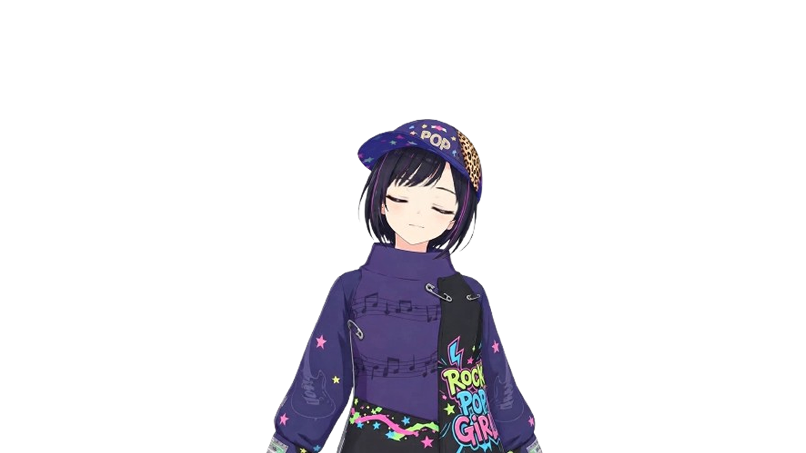

A browser tool where your avatar moves in response to your mic audio
Article 1 (Introduction) "maruPNG" (hereinafter "this tool") is a browser-based PNGTuber tool independently created by Maru. Users of this tool are deemed to have agreed to these Terms. Article 2 (License & Usage Scope) 1. Use of this tool is free. You are free to use it for live streaming and video creation, regardless of whether it is personal or corporate, commercial or non-commercial. 2. There are no restrictions on the monetization (Super Chats, Memberships, ad revenue, etc.) of videos or streams created using this tool. Article 3 (Prohibited Matters) Users shall not engage in the following acts: 1. Misappropriating the source code of this tool to claim authorship or distribute it under false pretenses. 2. Interfering with the operation of this tool or the hosting of GitHub Pages. 3. Using the tool in streams or videos containing content that violates public order, morals, or laws. Article 4 (Disclaimer) 1. The author does not guarantee that this tool is free of bugs, defects, or suitable for any specific purpose. 2. The author assumes no responsibility for any damages arising from the use of or inability to use this tool. Article 5 (Revision of Terms) These terms are subject to change without prior notice.
💡 Trial Sample Images (Right-click to save and use)

Talking
Blinking